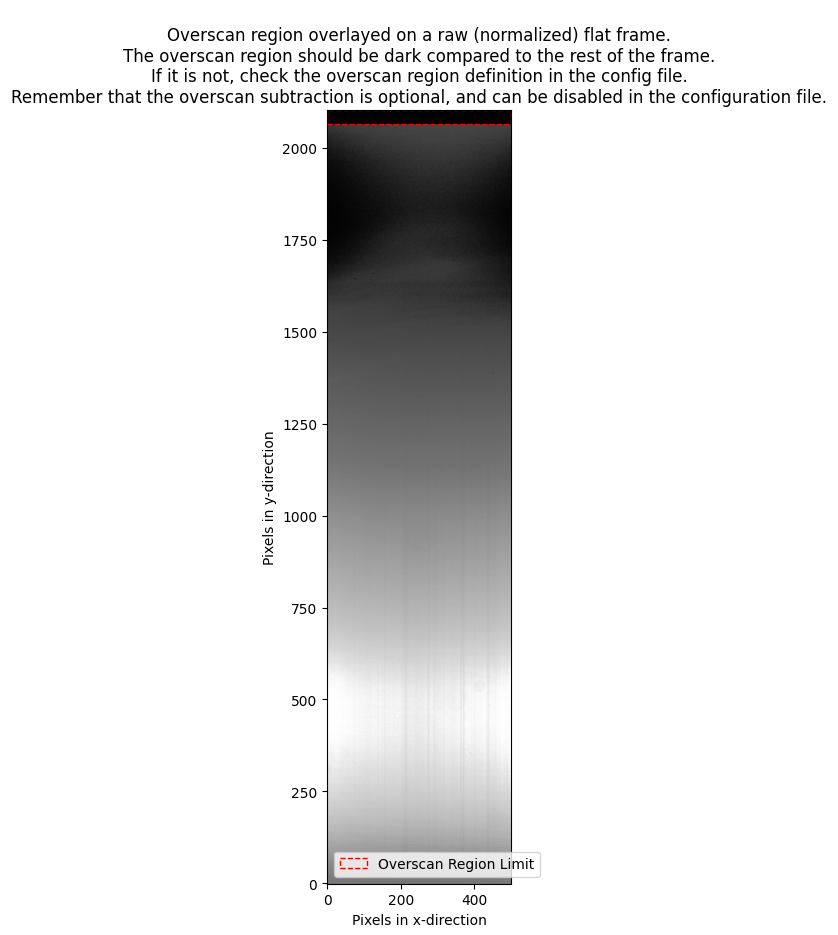

Bias¶
Quickstart¶
The command for running the bias procedure is called by:
pylongslit_bias PATH_TO_CONFIG_FILE
The bias procedure produces a master bias frame master_bias.fits by median-combining the raw frames,
and places it in the output directory specified in the configuration file. Median combination
is used as it is robust against outliers in the raw data.
Overscan subtraction¶
If overscan use is enabled in the configuration file, the bias procedure will estimate a mean overscan bias individually for every raw bias frame and subtract it, before median-combining the bias frames. In this case, the overscan bias is used as an estimate for the baseline bias-level frame-wise, while the master bias frame is used to correct for the 2D bias structure/gradient through the detector. With overscan subtraction, the master bias can show negative values, as these values correspond to an offset from the baseline bias-level, and not the absolute bias level. If you choose to disable the overscan subtraction in the configuration file (not recommended) , it is important that you do not enable it at any point during the other data-processing steps.
Quality Assessment¶
The bias procedure will show the final master bias and the error upon exiting. You can
press h to normalize the master bias to see the structure of the bias
frame more clearly. How the bias should look like depends on the detector,
and most instruments have archived master bias frames that can be used as a reference.
Overall, you are expecting to see a smooth 2D structure (example of normalized master bias from the SDSS_J213510+2728
tutorial data):
{kind=link}
Parameter options¶
The relevant parameters for the bias procedure are (with example values):
"detector": {
"overscan" : {
"use_overscan": true,
"overscan_x_start": 0,
"overscan_x_end": 499,
"overscan_y_start": 2064,
"overscan_y_end": 2102
}
}
"bias": {
"bias_dir": "/home/kostas/Documents/PyLongslit_dev/SDSS_J213510+2728/bias",
"bootstrap_errors": false
}
If you set "use_overscan": false, the overscan subtraction will be skipped,
and you do not need to worry about the rest of the overscan parameters. However,
if you set "use_overscan": true, you need to specify the overscan region
in the raw frames by defining a rectangular region with the parameters
"overscan_x_start", "overscan_x_end", "overscan_y_start", and "overscan_y_end",
with the orientation the raw data is provided in. You can call the command:
pylongslit_check_config PATH_TO_CONFIG_FILE
in order to plot the defined overscan region on a raw flat-field frame (the example is from the SDSS_J213510+2728 tutorial data):
{kind=link}
For the "bias_dir" parameter, you need to specify the path to the directory
where the raw bias frames are stored. Make sure only bias frames are stored in this directory.
The "bootstrap_errors" parameter can be set to true in order to estimate the error on the
master bias frame using bootstrap resampling. This is useful if you have
a small number of bias frames, and want to estimate the error with a higher
precision. However, the bootstrap resampling is computationally expensive,
and takes a while - especially for larger detectors. Whether bootstrap resampling is
necessary depends on the detector and your science case - if you do not
need very high precision on the error, or if you know your detector has a
stable bias level, you can mostly set "bootstrap_errors" to false. You can
read more about how the software estimates errors in the note on uncertainties.
For users new to data reduction - short introduction to detector bias¶
For technical reasons, a CCD detector is set-up to produce a baseline signal upon data readout. This means that a readout of an empty detector (no exposure) will produce a signal that is not zero. This signal is called the bias level, and it is a constant offset that is added to the signal produced by the incoming photons. In data processing, the bias level must be subtracted, such that 0 counts on the detector correspond to 0 incoming photons.
The bias is estimated by taking a series of bias frames - frames with no exposure time. The bias frames can then be analyzed to estimate the bias level at every pixel - this is usually referred to as the master bias frame. For some detectors, extra readout cycles are performed to readout pseudo-pixels that are not physical pixels on the detector - this is done for every frame (not only bias frames). These pseudo-pixels are called the overscan, and they have a value that corresponds to the bias level for the frame the overscan is attached to. The overscan regions can be used to estimate the bias level frame-wise (as the bias level can drift through the night), while the master bias is a statistical estimate of the bias level acquired by combination of all the bias frames (these are usually taken before or/and after the observing night).
The bias frames carry the information about the bias level for every pixel individually, but only at the time the frames were taken. The overscan regions carry the information about the bias level for the exact time the frame was taken, but only as an overall estimate for the frame. Therefore, a combination of both the overscan and the master bias is preferred. The software can run without using the overscan (this is set in the configuration file), but this method will ignore any bias level drift between the individual frames. Only using the overscan is not allowed in the software, as the mean overscan completely neglects the 2D structure of the bias.
Next pipeline step → Setting up for dark current subtraction